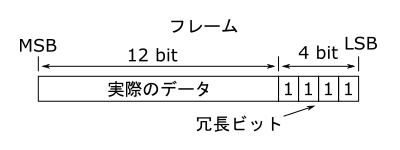

デジモンペンデュラムの通信
記事作成 : 2016/12/17(土) 最終更新 : 2016/12/20(火)はじめに
ペンデュラムの通信の流れは基本的に初代育成ギアと同じで、決まった形式のデータセットをお互いに1フレームずつ送信することで行われます。 ただし、そのデータセットの形式は初代のものとは異なっており、さらに、バトルとジョグレスでも別です(まあ、それほどの違いはありませんが)。 バトルのデータセットはスーパーヒットの情報や攻撃の当たり判定などが含まれるため、フレーム数が多くなっています。
冗長ビット
ペンデュラムでは各フレームの下位4ビットが全て"1"でなければなりません。 おそらくこれは、初代育成ギアの通信と区別するための冗長ビットだと考えられます。 冗長ビットという用語は、初代育成ギアの通信の際にも使用しましたがここでは意味合いが若干異なりますので注意してください。
この冗長ビットのいずれかが"0"だった場合、ペンデュラムは"0000000000000000"を返します。 その後も通信は継続しますが、バトルは開始されず、バトル待機状態が続くようです。
データセット(バトル)
バトル時のデータセットは下のように4フレームで構成されます。
【進化表位置】
ここは初代育成ギアと同様で、進化表の世代が低い方(左の方)から、同じ世代では上の方から順番に数値が割り当てられます。 (進化表の左とか上についてはどこか別の攻略サイトなどを参照してください。) デジタマから割り当てが開始しているのも同様で、成長期のワクチン種デジモンの値が"00011"となります。 ペンデュラムは1つのバージョンに登場するデジモン数が20体なので5ビットとなっています。
【通信モード】
バトルの通信であることを表します。 バトルの通信のときはここは"000"で固定です。
【バージョン】
ここも初代育成ギアと同様です。 バージョン1.0が"0000"で、そこからバージョンが1つ上がるごとに1ずつ増加します。 1.5や2.5については1.0、2.0と同じ値になります。
【スーパーヒット】
各ターンの攻撃の強さを表します。 最上位ビットが1ターン目に対応しており、そこから順番に2ターン目、3ターン目に対応します。 また、値が"0"のときが通常の攻撃で、"1"のときがスーパーヒットです。
【トレーニング数(上)/トレーニング数(下)】
トレーニングした回数を表します。 トレーニング数(下)の4ビットは1の位の桁を表し、トレーニング数(上)は10の位の桁を表しています。 つまり、トレーニング数(下)が"1001"の状態でトレーニングを行うと、"0000"となりトレーニング数(上)の値が1増加します。 トレーニング数は進化してリセットされるまで減少することはありません。
【攻撃当たり判定】
各ターンの攻撃がヒットしたかどうかを表します。 スーパーヒットと同様で上位ビットの方から順番に各ターンに対応します。 "0"のとき自身に攻撃がヒットし、"1"のとき攻撃を回避します。
【必殺技ドット】
使用する必殺技ドットに対応する数値です。 ペンデュラムは「.5」でデジモンが挿し替えられるため、バージョンと進化表位置から必殺技ドットを特定することができません。 そのため、ここでどの必殺技ドットを使用するか指定します。 各値にどのドットが対応しているかについてはこちらに一覧で示します。
【チェックサム】
ペンデュラムでは通信フレームの誤りを検出するためにチェックサムを使用します。 この値が計算した値と異なると通信エラーとなります。 計算は下の図に示す手順で行います。
まず、各フレームを4ビットごとに区切ります。 次に区切った4ビットを全て加算します(このとき、冗長ビットは含めません)。 加算結果の下位4ビットをビット反転したものがチェックサムとなります。
データセット(ジョグレス)
ジョグレス時のデータセットはバトルと比べるとシンプルで、下のような2フレームだけで構成されます。 内容についてもほとんどはバトル時の通信と同様なので説明は不要だと思います。
【進化表位置(現在)】
現在の進化表位置を表します。
【通信モード】
ジョグレスの場合は"010"で固定です。
【バージョン】
ギアのバージョンを表します。
【進化表位置(進化後)】
進化後の進化表位置を表します。
【チェックサム】
計算もバトル時と同様なので説明は割愛します。
必殺技ドット一覧
バトル時の必殺技ドットの値とドット絵の対応表です。 まだ未完成ですけど随時更新していきます。
| 値 | ドット絵 | 使用するデジモン |
|---|---|---|
| 0000000 | バブモン | |
| 0000001 | モチモン | |
| 0000010 | テントモン | |
| 0000011 | ゴツモン | |
| 0000100 | オタマモン | |
| 0000101 | オオクワモン | |
| 0000110 | トータモン | |
| 0000111 | ゲコモン |